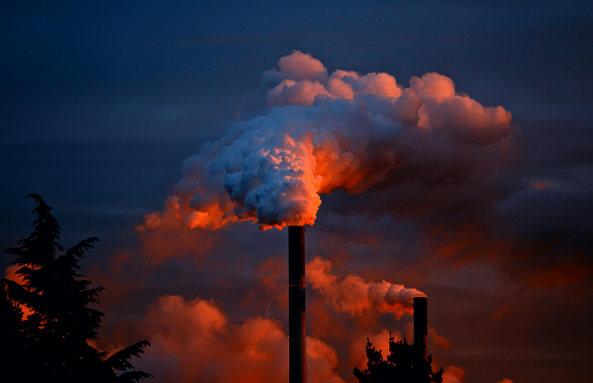
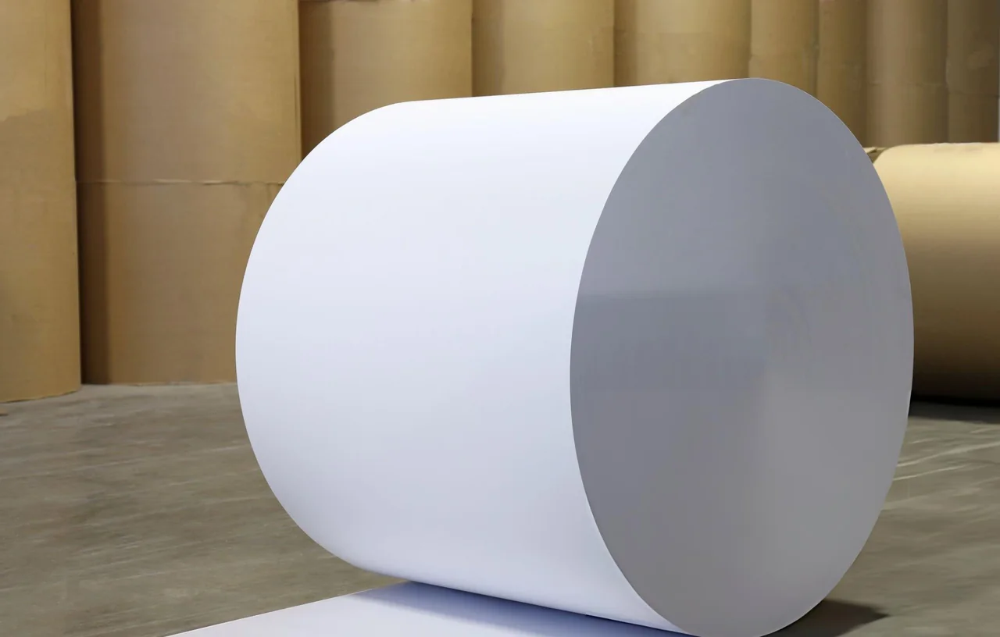
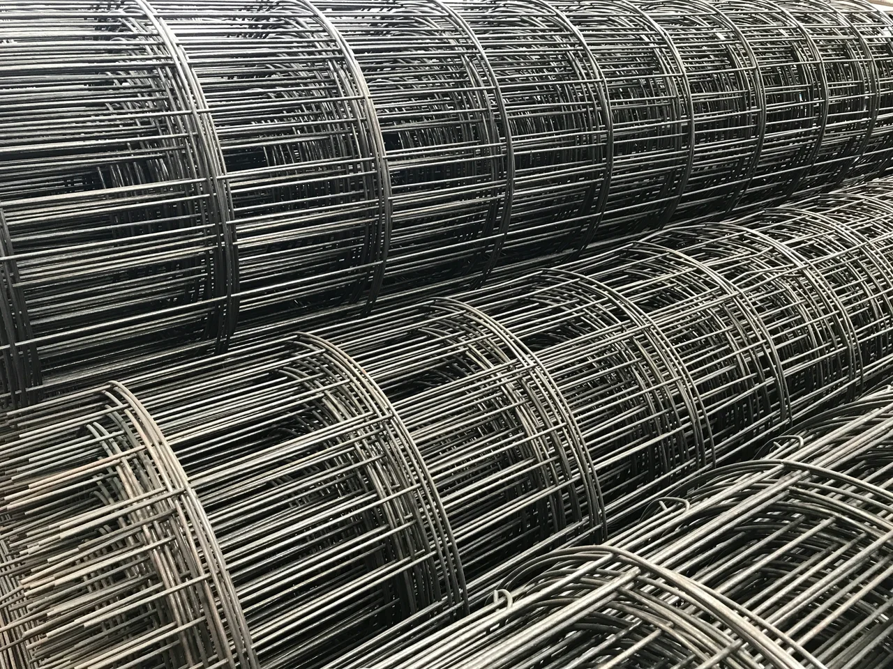

Cardinal Volta
Cardinal VoltaWaste heat,
so much
more to
give.




We turn industrial waste heat
into a new source of electricity.
Cardinal Volta brings research and engineering together to recover energy that would otherwise go unused.
Heat.
Power.
Repeat.
Organic Rankine Cycle technology puts thermal energy to work through a continuous loop.
Recover
Transfer waste heat into a working fluid.
Generate
Drive an expander connected to a generator.
Recirculate
Cool the working fluid and return it to the cycle.